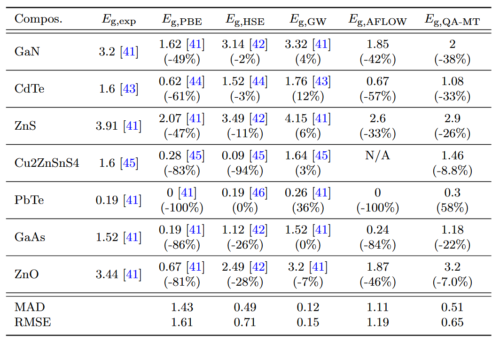

现实材料往往充满缺陷、杂质，而理论计算通常假设“完美晶体”，导致预测与实验偏差巨大。如何让AI既理解科学文献，又能准确预测真实材料的性能？近期有一篇论文给出了答案。作者团队提出了一种开源大语言模型，通过自然语言直接预测材料性能，在多个任务上超越传统方法，甚至接近高精度量子化学计算的准确性。
摘要：材料发现和设计旨在在高度复杂和多样化的物理空间中找到具有理想性能的成分和结构。传统的解决方案，如高通量模拟或机器学习，通常依赖于复杂的描述符，这阻碍了跨不同材料系统的可推广性和可转移性。此外，这些描述符可能无法充分代表宏观尺度的材料特性，这些特性受到现实世界样品中结构缺陷和成分变化的影响，从而限制了它们的实际适用性。为了应对这些挑战，我们提出了DARWIN 1.5，这是为材料科学量身定制的最大的开源大型语言模型。通过利用自然语言作为输入，DARWIN消除了对特定任务描述符的需求，并实现了灵活、统一的材料属性预测和发现方法。我们的方法整合了来自49256种材料的600万篇材料领域论文和21个实验数据集，同时实现了跨任务知识转移。与基本的LLaMA-7B架构相比，增强模型的预测精度提高了59.1%，在8个材料设计任务中优于SOTA机器学习方法。这些结果使LLM成为开发材料科学中通用和可扩展模型的有前景的基础。
研究背景和思路
2023年，ChatGPT的爆发让世界看到了大语言模型（LLM）的潜力——它们不仅能写诗、编程，甚至能通过美国医师执照考试。但在材料科学这样的专业领域，LLM能否真正发挥作用？
材料科学的核心挑战在于高效探索复杂的材料空间，以发现具有特定性能的新材料。
传统方法主要依赖两类技术：
- 基于物理原理的高通量模拟和基于机器学习的预测模型。然而，这些方法存在显著局限性。模拟计算虽然精度较高，但计算成本巨大且难以处理实验材料的非理想特性（如缺陷和杂质）；
- 机器学习模型虽能加速发现流程，但需要精心设计的特征描述符，导致模型通用性差，难以跨任务迁移。
现有的大型语言模型（如GPT系列）在科学领域的应用受限于闭源性、高成本和低透明度，阻碍了其在材料科学中的广泛采用。
更棘手的是，现实材料往往充满缺陷、杂质，而理论计算通常假设“完美晶体”，导致预测与实验偏差巨大。如何让AI既理解科学文献，又能准确预测真实材料的性能？
今天介绍的该论文给出了答案——作者团队提出了一种开源大语言模型，其核心思路是通过自然语言作为统一接口，结合两阶段训练策略（科学问答微调与多任务学习），构建一个开源、高效且可扩展的材料科学专用语言模型。这一设计旨在解决传统方法的输入限制，同时通过知识注入和任务协同提升模型的预测能力和泛化性。
自然语言：材料科学的“通用接口”
传统机器学习模型需要结构化输入，比如：
- 化学式 → 转换为描述符（如原子半径、电负性）→ 输入模型
- 晶体结构 → 转换为CIF文件 → 输入DFT软件
而DARWIN 1.5的创新在于：直接用自然语言提问，例如：
“CdCu₂SnS₄的带隙是多少？” → 模型输出 “1.37 eV”
这种方法省去了复杂的特征工程，使实验科学家能像使用搜索引擎一样查询材料性能。
具体方法分析
DARWIN 1.5的方法设计围绕三个关键环节展开：知识注入、任务统一（两阶段训练策略）和幻觉抑制 ，形成一个紧密衔接的技术链条。
两阶段训练：让AI既懂理论，又会预测
- 知识注入：科学问答（QA）微调模型首先通过科学问答（QA）微调阶段注入领域知识。这一阶段的核心是从材料科学文献中提取高质量的问答对，构建训练数据集。具体实现中，作者采用了一种半自动化的数据生成流程：先使用GPT-4对700篇精选文献生成种子QA对，再基于这些数据微调一个LLaMA-3模型作为QA生成器，最终扩展到33万对问答数据。这些问答对覆盖了材料合成、性能表征和实验方法等关键知识，使模型能够像科学家一样通过文献分析解决问题。值得注意的是，问答设计避免了依赖特定论文的局部信息（如“本研究”类问题），确保知识的普适性。这一阶段为模型奠定了科学推理的基础，使其能够理解材料描述与性能之间的复杂关系。
- 从600万篇材料科学论文中提取33万对问答（如“如何合成钙钛矿太阳能电池？”），让模型学习科学推理能力。
- 关键点：避免“死记硬背”，而是让模型像科学家一样分析问题。
- 任务统一：多任务学习（MTL）在知识注入的基础上，模型通过多任务学习框架统一处理22个材料预测任务（5分类+17回归）。作者创新性地将传统结构化数据（如材料组成、SMILES字符串）转换为自然语言指令格式。例如，带隙预测任务被表述为“CdCu₂SnS₄的带隙是多少？”，模型需直接生成“1.37 eV”类答案。这种转换消除了对专业描述符的依赖，实现了输入输出的标准化。多任务学习的优势体现在三方面：一是通过共享表征捕捉不同材料属性间的物理关联（如带隙与形成能的关系）；二是利用任务间的数据互补性缓解单一任务数据不足的问题；三是统一的自然语言接口支持跨模态任务（如从组成预测性能与从SMILES预测溶解度）。实验表明，多任务策略在回归任务中尤其有效，平均性能提升达10.77%。
- 整合21个实验数据集（5分类+17回归任务），涵盖带隙、溶解度、力学性能等。
- 模型学会跨任务知识迁移，例如：理解“带隙小的材料通常导电性好”。
幻觉抑制：反例训练机制
针对LLM易产生幻觉的问题，作者设计了一种反例训练机制。在训练数据中混入5%的刻意错误样本（如用非材料名词“farmer”提问玻璃形成能力），迫使模型学习拒绝不合理输入。这种方法的有效性通过对照实验得到验证：引入反例后，模型在保留正常任务性能（F1分数波动<1%）的同时，几乎完全消除了对荒谬输入的误判。这一机制显著提升了模型输出的可靠性，使其更适合科学应用场景。
模型基于LLaMA-7B架构，训练中采用BF16精度和DeepSpeed优化以平衡计算效率与数值稳定性。QA微调阶段使用长上下文处理技术（LongLoRA），支持16k token的文献输入；多任务阶段则采用更紧凑的512 token长度以适应属性预测任务。推理时通过温度参数（0.8）和Top-p采样（0.75）控制生成多样性，确保输出兼具准确性与可读性。整个训练流程在4台AMD MI250X GPU上完成，多任务微调仅需4小时，展现出较高的工程可行性。
性能对比：接近HSE，远超传统ML
下表对比了不同方法在带隙预测上的表现（单位：eV）：

DARWIN 1.5的精度接近HSE（计算成本高100倍），远优于PBE，且推理仅需秒级，适合高通量筛选。
QA-MT在无需结构信息的情况下，达到了与HSE相当的精度，且远优于基于PBE的ML模型（如AFLOW）。尽管未超越GW，但QA-MT的低输入要求（仅需材料成分）和快速推理速度（秒级）使其适用于高通量筛选，验证了LLM在材料科学中的实用性。
👆图展示了不同微调策略对任务性能的影响，其中两阶段微调（QA-MT）在分类和回归任务中均取得最佳效果，平均提升分别达到3.38%和11.79%，显著优于单任务基线。值得注意的是，R9任务的性能提升高达58.12%，而部分任务如R4和R5出现性能下降，这反映了任务间相关性和数据分布对知识迁移的重要影响。
图3的横向对比显示，QA-MT在14个任务中的11个超越了传统ML模型，并在大多数任务上优于GPT-3.5和GPT-4。这一结果突显了领域适配微调的重要性，同时也揭示了闭源模型在专业领域应用中的局限性。图4和图5的深入分析表明，预训练提供的通用语言能力是多任务学习的基础，而通用材料表示（如成分）相比专用表示（如SMILES）能获得更显著的知识迁移效果。
消融实验（图6）揭示了多任务学习的双重机制：真实数据（+matbench）带来的44% MAE降低证实了领域知识的核心作用，而合成数据（+Syn_2）仅能提升指令解析能力。这种机制解析为模型优化提供了明确方向。最后，图7的反例训练研究表明，引入5%的人工反例可有效抑制模型幻觉，且不影响正常任务性能，这一发现为提升模型可靠性提供了实用方案。
综合来看，这些实验结果不仅验证了DARWIN 1.5在准确性、效率和泛化性方面的优势，更通过细致的机制分析揭示了语言模型在材料科学中的独特价值——以自然语言为桥梁，融合人类知识积累与机器计算能力，为材料发现提供了新的研究范式。
尽管DARWIN 1.5表现出色，但仍存在一些局限性：
- 数据依赖性：模型的性能高度依赖于训练数据的质量和覆盖范围，对于某些特殊材料体系或新兴领域，可能因数据不足而表现不佳。
- 解释性不足：作为黑箱模型，其预测结果的物理机制难以直接解释，可能影响在需要严格理论支持的场景中的应用。
- 任务间差异：部分任务（如R4、R5）的性能下降表明，模型在多任务学习中对某些任务的知识迁移效果有限，需进一步优化任务选择和数据平衡策略。
语言模型不仅能够有效处理结构化材料数据，更重要的是建立了自然语言描述与材料性质之间的可靠关联。这种技术路径的优势在于其可扩展性和易用性，但同时也面临着模型可解释性和数据依赖性等客观限制。这些发现为后续研究提供了明确的技术参照，同时也提示我们需要保持理性认知——人工智能在科研中的应用应当被视为增强人类研究能力的工具，而非替代科学思维本身。未来研究需要在技术优化与理论深化之间寻求更好的平衡，以推动材料科学研究的持续发展。